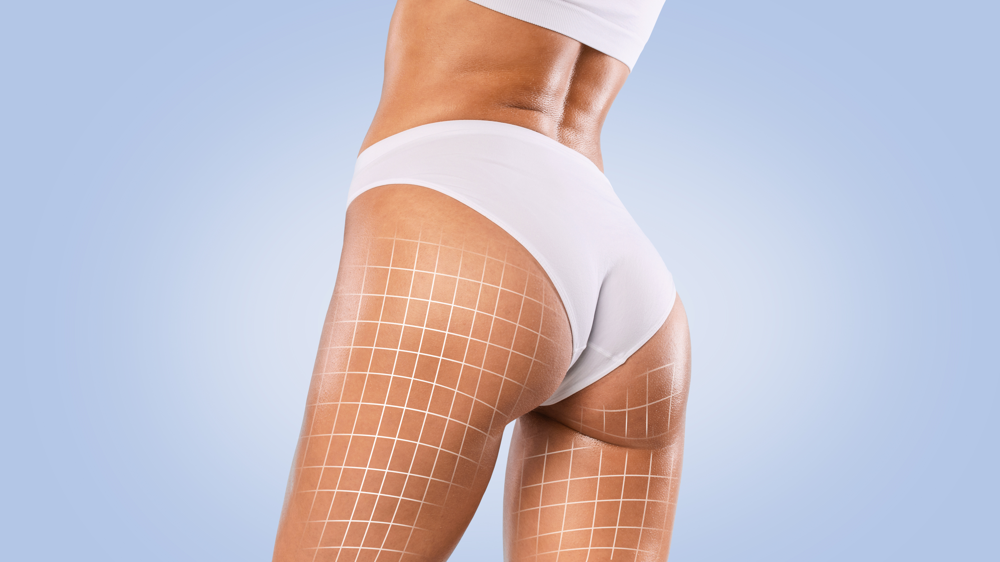

Afslanken cryolipolyse
Uw schoonheidssalon voor afslanking, verzorging en esthetiek
Cryolipolyse is een methode waarbij vetcellen door een behandeling met kou worden aangepakt. Het is een veilige en betrouwbare methode waaraan geen operatie of verdoving te pas komt. Bij cryolipolyse worden de vetcellen namelijk door gecontroleerde koude gekoeld tot ze kristalliseren. Vervolgens voert het lichaam de vetcellen geleidelijk af via de natuurlijke weg.

Cryolipolyse: Methode
Cryolipolyse is ontstaan tijdens een onderzoek waarbij werd getest op het effect van kou op cellen in het lichaam door de Universtiteit van Harvard (VS). De resultaten lieten zien dat vetcellen heviger reageren op kou dan andere cellen (bijv. spieren, zenuwen of orgaancellen).
Vetcellen beginnen bij 4 graden Celsius al te kristalliseren. Vanuit deze optiek is vetverwijdering door Cryolipolyse ontstaan.
De Cryolipolyse is veilig, pijnloos en in tegenstelling tot liposuctie hoeft er niet geopereerd of verdoofd te worden. Dit zorgt ervoor dat vrijwel meteen de dagelijkse taken kunnen worden opgepakt.
In ons instituut in Keerbergen geven we een gerichte behandeling op specifieke lichaamsplaatsen die slanker moeten worden. In tegenstelling tot het bredere effect van diëten, heeft het dus alleen effect op de behandelplaats. Het eindresultaat is te zien na 2 maanden, een vetvermindering van 25 tot 35% is mogelijk.
Hoe werkt de koeling precies? In de illustraties hieronder wordt dat duidelijk. Na een behandeling van 50 minuten zijn de vetcellen aangepakt zodat ze in de weken daarop uiteenvallen en het lichaam via de natuurlijke weg verlaten.
Cryolipolyse: Meest gestelde vragen
Hoe lang duurt een cryolipolyse behandeling?
Gemiddeld duurt een behandeling 80 minuten. Meestal wordt het vetweefsel in 50 minuten effectief gekoeld. Wij kunnen tot 4 handstukken tegelijkertijd aansluiten. U kunt dus twee zijdes en 2 andere zones tegelijk laten behandelen. Tijdens de behandeling kunt u ontspannen en iets voor uzelf doen, zoals een boek lezen of uw smartphone/tablet gebruiken. Als voorafgaand aan de behandeling een intakegesprek plaatsvindt, zal de afspraak in totaal 95 minuten duren.
Boek nu uw Laser ontharing met -30% korting tot 30 april 2024 De korting blijft geldig de volledige behandeling!
Kan ik meerdere cryolipolyse behandelingen op één dag ondergaan?
Ja, dat is geen probleem. Sommige mensen vinden het prettig om een dubbele afspraak in te plannen, dus een behandeling van twee uur. De behandeling bestaat dan wel uit twee verschillende zones. Je mag namelijk niet direct een tweede behandeling in hetzelfde gebied ondergaan, aangezien het lichaam tijd nodig heeft om de vetcellen op te ruimen (minimaal twee maanden).
Hoeveel cryolipolyse behandelingen heb ik nodig?
Afhankelijk van het aantal zones, de omvang van het vetweefsel en uw persoonlijke wensen. De meeste mensen ondergaan één tot drie behandelingen per zone. Er zijn ook mensen die voldoende resultaat zien na één behandeling. Of dit resultaat voldoende is bepaalt u uiteindelijk zelf.
Hoe lang duurt het voordat ik resultaat zie van de cryolipolyse behandeling?
Enkele weken na de eerste cryolipolyse behandeling kunt u contourverbetering waarnemen. De broek kan bijvoorbeeld makkelijker dicht, vetrandjes voelen gladder aan en de onderliggende spieren worden beter zichtbaar. Optimaal resultaat wordt bereikt na drie maanden.
Bekijk hier de prijzen!
Na ongeveer twee maanden kunt u beslissen of u een aanvullende behandeling nodig heeft om het gewenste resultaat te bereiken. Een aanvullende behandeling na twee maanden zal het resultaat versterken. Meerdere behandelingen ondergaan per zone is niet schadelijk voor het lichaam.
Is cryolipolyse pijnlijk?
Cryolipolyse is niet pijnlijk, hoogstens aan het begin en net na de behandeling licht ongemakkelijk. Zodra de behandeling start, voelt u dat het vetweefsel in het handstuk gezogen wordt. De eerste tien minuten van het koelproces kunt u een beetje gevoeligheid, kramp, tintelingen en kou ervaren. Dit gevoel verdwijnt naarmate het weefsel van het lichaam intens wordt gekoeld. Na de behandeling kan het behandelgebied een beetje beurs aanvoelen. De meeste mensen liggen er tijdens de behandeling zeer ontspannen bij.
Is het mogelijk dat er een rand zichtbaar wordt in het vetweefsel?
Nee, je kan niet terugzien waar de handstukken op de huid hebben gestaan. Het lichaam verdeeld de resterende vetcellen mooi gelijkmatig over de zone.
Heeft cryolipolyse bijwerkingen?
Bij sommige mensen kan er een blauwe plek ontstaan of roodheid van de huid in het behandelgebied. Dit is van tijdelijke aard. Een verdoofd gevoel in het behandelgebied kan enkele weken aanhouden.
Risico’s zijn tegenvallende cosmetische resultaten, langer aanhoudende roodheid en zwelling en tijdelijke stijfheid van spieren. In het verleden zijn tijdens bepaalde studies naar cryolipolyse de volgende bijwerkingen voorgekomen: vergroting van weefsel, duizeligheid, misselijkheid of opvliegers, knobbeltjes in behandelgebied en pigmentverschuivingen. Dit betreft zeer zeldzame gevallen.
Is een cryolipolyse behandeling gevaarlijk?
Nee, een cryolipolyse-behandeling is niet gevaarlijk en niet schadelijk. De vetcellen worden niet direct kapot gemaakt. Het lichaam breekt de gekoelde vetcellen af tot kleine deeltjes. Beetje bij beetje ruimen de macrofagen (witte bloedcellen) de restjes op, waarna ze via het lymfesysteem en de lever afgevoerd worden. Dit geleidelijke opruimproces duurt acht tot twaalf weken. Je lichaam heeft hier geen last van.
De vetcellen worden tot 2 à 3 ºC gekoeld, de huid daarboven -9 ºC. De speciale gelkussens die tussen de handstukken en de huid geplaatst worden, bieden goede bescherming voor de huid. De andere cellen en weefsels worden niet aangetast door de behandeling. De organen van de buik blijven beschermd door een dikke laag spieren en peesblad. De ingebouwde veiligheidssensoren behouden een constante doeltemperatuur die ongewenste neveneffecten voorkomt.

Wanneer kom ik niet in aanmerking voor cryolipolyse?
Mensen met diabetes, koude urticaria, syndroom van Raynaud, kanker, verminderde gevoeligheid van de huid, neuropatische aandoeningen, bloedarmoede, cryoglobulinemie of paroxysmale koude hemoglobinurie kunnen geen cryolipolyse-behandeling ondergaan. Cryolipolyse kan tevens niet toegepast worden wanneer er sprake is van een hernia, bepaalde huidaandoeningen, spataderen, een recente operatie, verkleefd littekenweefsel of wonden in het beoogde behandelgebied. Bij allergieën, gebruik van medicijnen en/of andere aandoeningen is het raadzaam om vooraf met een arts te bespreken of een behandeling is toegestaan. Ook raden wij cryolipolyse af tijdens zwangerschap en de borstvoedingsperiode.
Voor wie is cryolipolyse wel geschikt?
Cryolipolyse is zowel geschikt voor mannen als vrouwen. De ideale kandidaat is een cliënt die reeds dicht bij het ideale gewicht zit, maar enkel nog last heeft van lokale vetophopingen, zoals bij de bovenarmen, buik, flanken, dijen, rug, BH-uitstulpingen, ‘love handles’ en heupen. De behandeling is bedoeld voor reductie van lokale vetophopingen en contourverbetering. Het is niet een oplossing voor gewichtsverlies. Bij overgewicht adviseren wij eerst het vetpercentage te verlagen door training en het volgen van een gezond dieet. De behandeling kan daarentegen niet worden toegepast wanneer het behandelgebied te weinig vet bevat.
Kan een cryolipolyse behandeling mijn tatoeage vervagen?
Nee, de behandeling kan gewoon uitgevoerd worden in het gebied van de tatoeage. De tatoeage blijft volledig intact.